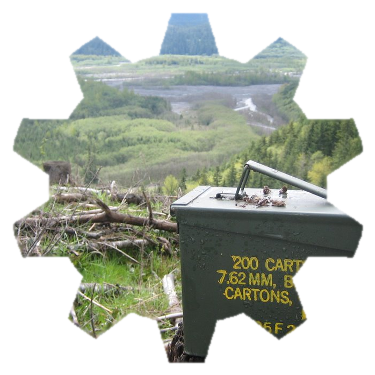
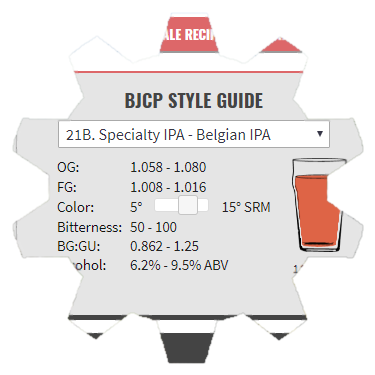
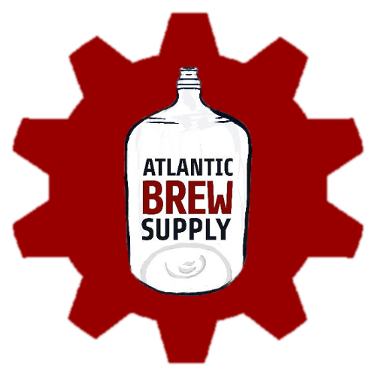
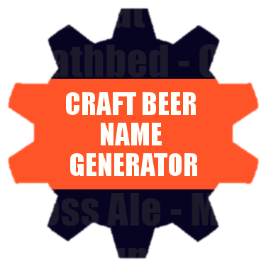

CO-CREATOR / DEVELOPER
My Geocaching Profile.com
I co-created and developed mygeocachingprofile.com in 2007 and sold it to Groundspeak, Inc. (the creators of geocaching) in 2010. The site analyzes a geocacher's activity and builds a visual profile full of statistics, charts, and maps
about their geocaching achievements. I continue to support and develop the site part-time for Groundspeak.
asp.net, c++, html/css, javascript, iis, ms sql server

DESIGNER / DEVELOPER / CONSULTANT
Atlantic Brew Supply Homebrew Recipe Generator
I worked with Atlantic Brew Supply in 2016 to create a Homebrew Recipe Builder on their website. The tool allows homebrewers to build beer recipes and see how ingredients affect the ABV, bitterness, calories, and even color of their brew.
We continue to add new features to this tool including a button that will add all of a recipe's ingredients to the user's shopping cart for easy purchase.
html/css, javascript, 3dcart ecommerce/cms platform

WEB DEVELOPMENT CONSULTANT
Atlantic Brew Supply
I've performed ongoing consultation and development for Atlantic Brew Supply and their partner companies ABS Commercial and Cask Supply since 2016. I help their team add features to these websites and extend the capabilities of their 3dcart
ecommerce/CMS platform. We've worked on many features including a location-based shipping estimate tool, a flyout sidebar, a new checkout flow, and more.
html/css, javascript, 3dcart ecommerce/cms platform

CREATOR / DESIGNER / DEVELOPER
Craft Beer Name Generator.com
I created a fun craft beer name generator that learned to create its own beer names after using machine learning to study Untappd.com's API of thousands of beers. I also built in an API so other sites can get random craft beer names for
their own projects.
html/css, javascript, jquery, php, torch-rnn (character-level language modeling program )

WEB DEVELOPMENT CONSULTANT
NCSU Student Legal Services
In 2017, I worked with the NCSU Student Legal Services director to re-organize their WordPress website's content and add a new three-column format aross the site.
html/css, wordpress